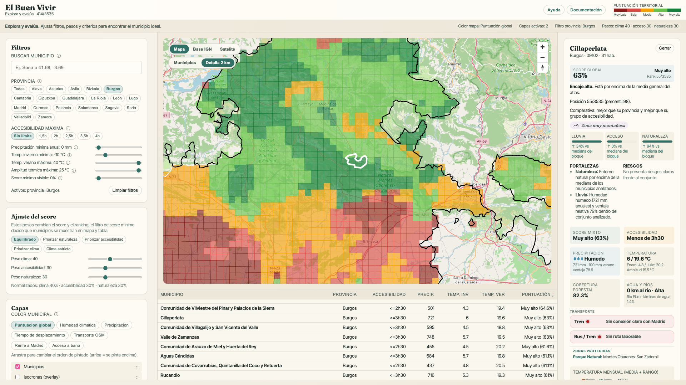
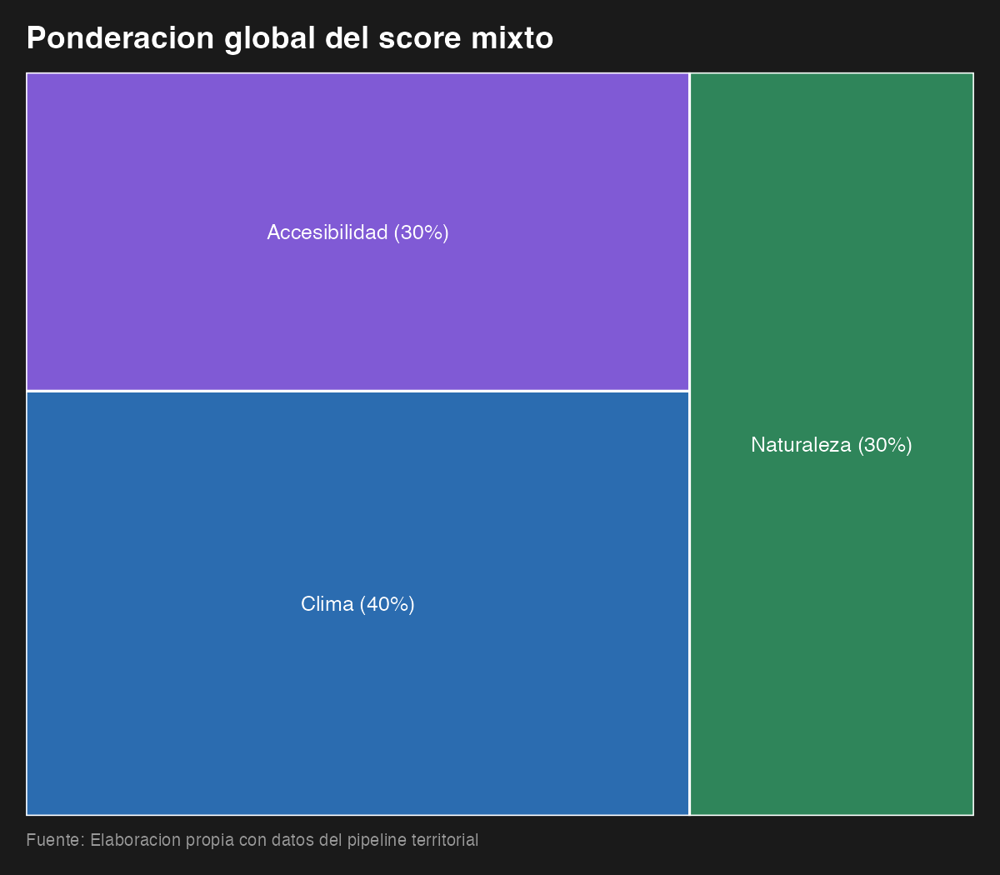
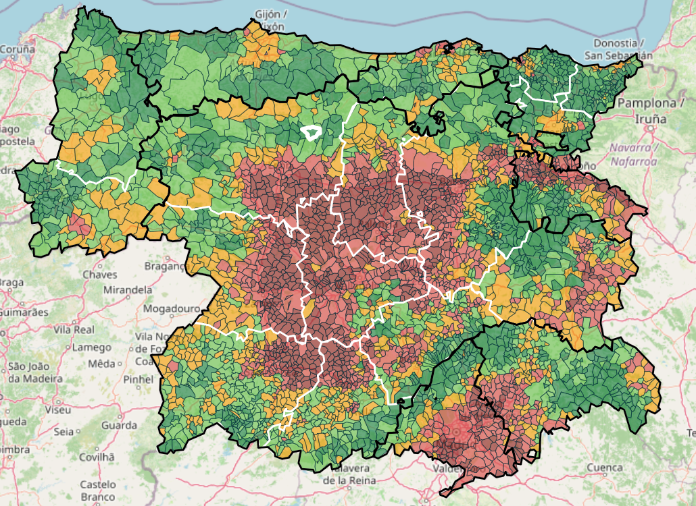
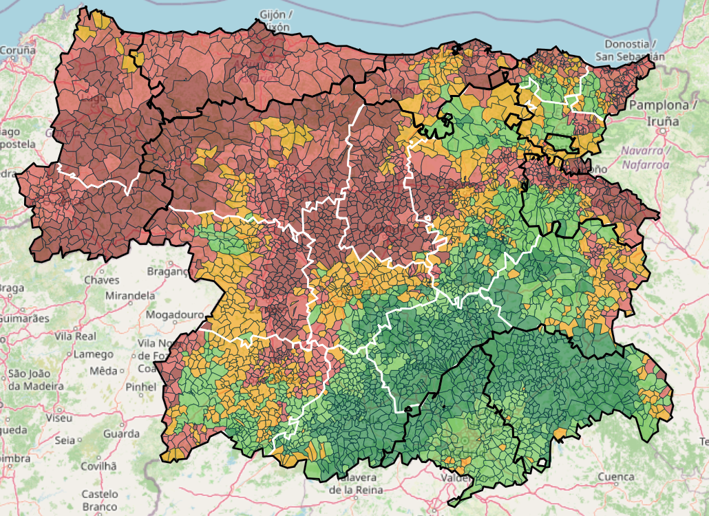
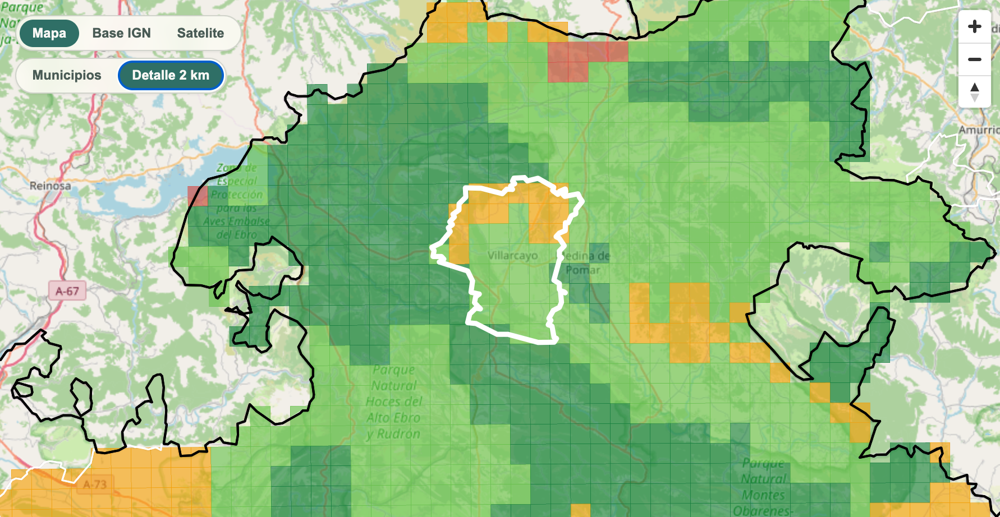
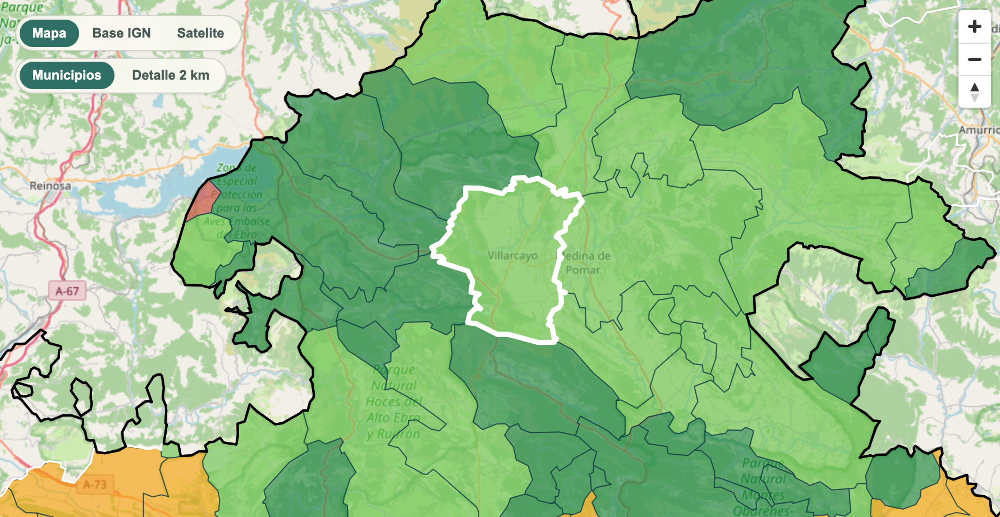
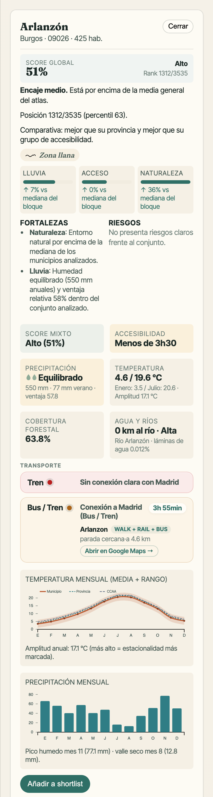
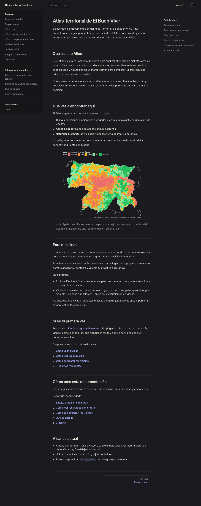

La herramienta para explorar lugares posibles para El Buen Vivir.

El mixed_score resume clima, acceso y naturaleza para ayudar a detectar municipios interesantes dentro del territorio analizado.

Valora el paisaje y un clima más fresco en verano por encima de la distancia.
Prefiere un lugar más cercano para poder disfrutarlo a lo largo del año sin recorrer tantos kilómetros.


La rejilla ayuda a encontrar diferencias dentro de municipios grandes, donde puede haber paisajes muy distintos. Algunas métricas se calculan primero en celdas 2x2 km y después se agregan al municipio.


Clima, relieve, accesibilidad, agua, transporte, entorno natural y mucho más, municipio a municipio.

Indicadores, pesos, fuentes y decisiones metodológicas pueden consultarse públicamente.

El Atlas ayuda a comparar y encontrar lugares a partir de los indicadores disponibles, para acercarnos al mejor lugar donde establecer El Buen Vivir.
La herramienta para explorar lugares posibles para El Buen Vivir.